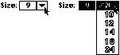
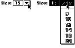

|
Type-In Pop-Up MenusSometimes it is useful to display a list of likely choices but still allow the user to type in a choice that you can't anticipate. Keep in mind that all preset choices should be visible so that people can make choices with mouse actions. The type-in option should be an additional choice when appropriate, not a requirement. You'll need to handle error checking and feedback for the typed data, as you would for a text entry field.If the user types in an item that is already in the
menu, place a checkmark next to the menu item. When the
menu is open, highlight the item in the text box and the
corresponding item in the menu. This behavior prevents a
quick look in the menu from accidentally wiping out the
previous value. It also reinforces the idea that choosing a
different value in the menu changes the value in the text
box. You don't need to highlight the title of the menu in
this situation. The standard pop-up menu lends itself
readily to this extension, Figure 4-51 A type-in pop-up menu  If the value typed into the text box does not match any of the items in the pop-up menu, add the type-in value as the first item and separate it from the standard values by a gray or dotted line, as shown in Figure 4-52. This item disappears from the menu when the user selects a standard value from the pop-up menu. Separating the custom item from the standard items makes a clear distinction between the items that are always available and the typed-in value, which is only temporary. Figure 4-52 A type-in pop-up menu with user's choice added  |